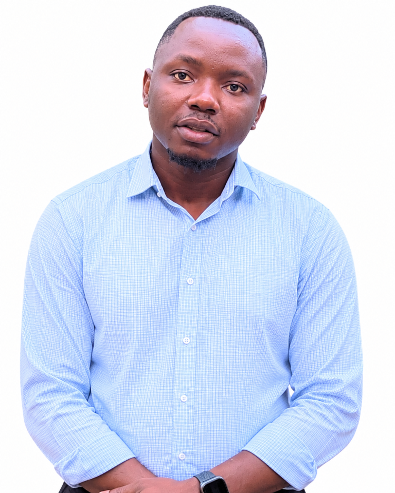
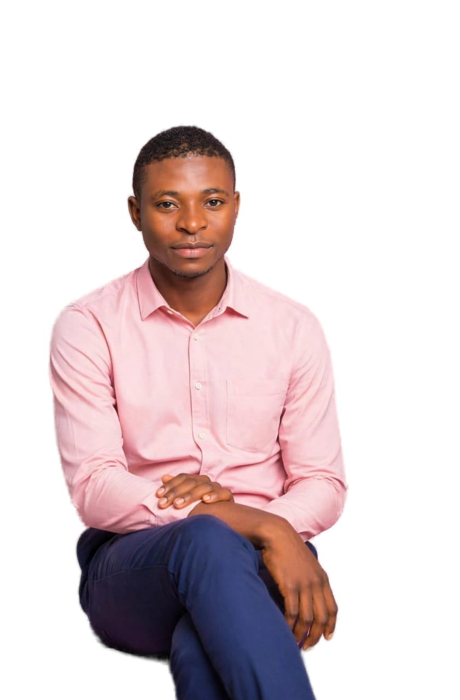

To empower communities
To empower communities through sustainable livelihoods, agricultural advancement, entrepreneurship, education, environmental stewardship and strategic partnerships.
About RweDI
A proposed community-focused initiative working towards sustainable social and economic development.
Organisation overview
Rwenzori Development Initiative (RweDI) is a proposed community-focused development organisation being established to contribute to sustainable social and economic development in Kasese District, Uganda. Its headquarters is proposed to be in Kasese Municipality.
RweDI intends to work with communities, public institutions, civil society, private-sector actors and development partners. It aims to work practically, respectfully and inclusively with farmers, families, schools, young people and local organisations.
Organisational status: RweDI is not yet registered, according to its foundational working draft. It should not represent itself as a registered NGO or claim donor eligibility before completing applicable legal requirements.
To empower communities through sustainable livelihoods, agricultural advancement, entrepreneurship, education, environmental stewardship and strategic partnerships.
To transform rural communities through sustainable economic and social development.
RweDI’s strategic programme areas are agriculture and food security; youth empowerment and entrepreneurship; education and human development; and environment and community resilience. These areas reflect its stated aim to support sustainable livelihoods, agricultural advancement, entrepreneurship, education and environmental stewardship.
Its initial geographic focus is Kasese District. Any expansion will depend on demonstrated capacity, community demand, partnerships and regulatory approvals.
The people establishing RweDI

Founder & Executive Director
Enos Kabale is the Founder and Executive Director of Rwenzori Development Initiative (RweDI), providing strategic leadership and direction towards the organisation's vision of building empowered, resilient and sustainable communities.
Driven by a strong commitment to community transformation, he guides the organisation's institutional development, programme implementation and long-term development priorities. He champions initiatives that promote social progress, economic empowerment, environmental sustainability and improved livelihoods.
Through his leadership and dedication, he continues to inspire a development approach rooted in accountability, collaboration, innovation and meaningful community participation.

Co-Founder
Bwambale John is a Co-Founder of Rwenzori Development Initiative. He contributed to the establishment of the organisation and its commitment to addressing challenges affecting communities. His proposed area of contribution centres on community engagement, identifying local development needs and supporting initiatives in areas such as education, health, environmental sustainability and livelihood improvement.

Co-Founder
Masereka Benet is a Co-Founder of Rwenzori Development Initiative. He contributed to the establishment of the organisation's vision and its commitment to sustainable community development. His proposed area of contribution centres on strategic thinking, organisational direction and promoting initiatives that empower communities, strengthen local capacity and create opportunities for lasting social and economic transformation.
Governance commitment
RweDI intends to establish an independent Board of Directors with oversight responsibilities and a professionally managed secretariat. Its partnership approach is intended to use written agreements, clear roles, safeguarding standards and transparent financial arrangements.